A discrete convolution applies a fixed kernel to every pixel location and replaces the
pixel by a weighted sum of its neighborhood, using zero-padding so that the output has the
same extent as the input. Because the same weights are used everywhere, the operation is
linear and shift-invariant; any change in behavior must come from the kernel rather than
from the particular implementation.
The same operator is applied in three ways: a direct four-loop version that mirrors the
mathematical definition, a two-loop NumPy version that vectorizes the inner products over
image patches, and SciPy’s optimized convolve2d. Each is applied to a self-portrait
using an identical 9×9 box kernel, and the same three implementations are then applied to the
finite-difference filters Dx and Dy.
9×9 box filter and finite differences on self-portrait
Benchmarking the 9×9 box filter on this image yields average runtimes of
14.990 s (four loops), 2.670 s (two loops), and 0.114 s (SciPy), implying roughly
5.6× speedup from vectorizing the inner sum and roughly 132× speedup from the SciPy
implementation over the naive baseline. The timing values in conv_timings.csv
are in seconds (as returned by the benchmark), while the command-line printout is in
milliseconds because it multiplies by 1000.
The box-filter outputs are visually indistinguishable across implementations, indicating
that the three methods realize the same linear operator with different constant factors.
The Dx/Dy visualizations likewise match after normalization; their
embossed appearance reflects that derivative responses are signed, so display normalization
maps near-zero regions toward mid-gray and assigns opposite contrast to opposite edge directions.
Convolution implementations (Python)
pad_zero
import numpy as np
def pad_zero(img: np.ndarray, pad_h: int, pad_w: int) -> np.ndarray:
"""Zero-pad a 2D image by (pad_h, pad_w) on all sides."""
assert img.ndim == 2
H, W = img.shape
out = np.zeros((H + 2 * pad_h, W + 2 * pad_w), dtype=img.dtype)
out[pad_h: pad_h + H, pad_w: pad_w + W] = img
return out
conv2d_four_loops
def conv2d_four_loops(img: np.ndarray, kernel: np.ndarray) -> np.ndarray:
"""
Naive 2D convolution using 4 nested loops and zero padding.
img: 2D grayscale image
kernel: 2D filter kernel
"""
assert img.ndim == 2
# flip kernel for convolution
k = np.flipud(np.fliplr(kernel))
kh, kw = k.shape
ph, pw = kh // 2, kw // 2
padded = pad_zero(img, ph, pw)
H, W = img.shape
out = np.zeros_like(img, dtype=np.float32)
for y in range(H):
for x in range(W):
acc = 0.0
for j in range(kh):
for i in range(kw):
acc += padded[y + j, x + i] * k[j, i]
out[y, x] = acc
return out
conv2d_two_loops
def conv2d_two_loops(img: np.ndarray, kernel: np.ndarray) -> np.ndarray:
"""
More efficient convolution: 2 loops over pixels, inner sum done by NumPy.
"""
assert img.ndim == 2
k = np.flipud(np.fliplr(kernel))
kh, kw = k.shape
ph, pw = kh // 2, kw // 2
padded = pad_zero(img, ph, pw)
H, W = img.shape
out = np.zeros_like(img, dtype=np.float32)
for y in range(H):
# slice the relevant "row band" once per y
row = padded[y: y + kh, :]
for x in range(W):
patch = row[:, x: x + kw]
out[y, x] = float(np.sum(patch * k))
return out
1.2 Finite Difference Operator
Simple finite-difference kernels approximate the partial derivatives of an image. A
horizontal difference filter estimates changes in intensity along the x-direction, and a
vertical difference filter does the same along y. Applied to the cameraman image, these
operators produce derivative images that respond where the scene contains strong
horizontal or vertical contrast and remain near zero where intensity varies slowly.
Cameraman gradients, magnitudes, and edges
Original cameraman image (grayscale reference for all derivative visualizations).
Horizontal derivative: vertical structures such as the tripod legs and building edges
appear as bright responses where intensity changes strongly left-to-right.
Vertical derivative: horizontal structures such as the horizon and rooftop lines
dominate the response, while sky and grass remain near zero.
Gradient magnitude: combines horizontal and vertical changes into a single measure of
edge strength, concentrating high values along object boundaries.
Binary edge map: thresholded gradient magnitude retains the main contours of the
cameraman, tripod, and skyline while suppressing small noisy responses.
Orientation visualization (fast approximation): edge direction is encoded as hue, with
saturation driven by gradient strength, revealing how directions vary smoothly along
curved contours.
Orientation visualization (arctangent reference): produces almost identical color
patterns, confirming that the approximate method recovers the same underlying
orientation field at lower computational cost.
Taken together, the directional derivatives, gradient magnitude, thresholded edge map, and
orientation visualizations provide a first-order geometric description of the image. The
derivatives separate vertical from horizontal structure, the gradient magnitude identifies
locations of maximal change, and the binary map selects a subset of those locations as
edges. The orientation fields attach a direction to each edge pixel, information required
for later constructions such as corners or oriented descriptors. The close match between
the approximate and arctangent-based orientation images shows that a cheaper numerical
scheme can recover essentially the same orientation field for subsequent processing.
1.3 Derivative of Gaussian Filter
We now explore two strategies for computing smoothed image gradients: first blurring
the image with a Gaussian filter and then applying finite-difference kernels, versus
convolving once with derivative-of-Gaussian (DoG) kernels. Since convolution is linear and
shift-invariant, differentiating the Gaussian and then convolving the result with the image
should be equivalent, up to numerical and boundary effects, to convolving with the Gaussian
followed by discrete differentiation.
Horizontal and vertical derivative-of-Gaussian kernels are constructed and applied to the
cameraman image. The resulting directional derivatives and gradient magnitudes are
juxtaposed with those obtained from the “smooth then difference” pipeline. The comparison
tests whether the one-step DoG approach reproduces the same sharpened edges and reduced
noise as the two-stage method that explicitly separates smoothing and differentiation.
Gaussian smoothing vs. derivative-of-Gaussian
Horizontal DoG kernel: a smoothed, antisymmetric pattern that responds to vertical
edges while attenuating high-frequency noise.
Vertical DoG kernel: rotated counterpart used to detect horizontal edges with the same
built-in smoothing.
Horizontal gradient from “smooth then difference”: vertical contours of the tripod,
coat, and buildings remain sharp, but background noise is strongly reduced.
Vertical gradient from “smooth then difference”: horizontal structures such as the
horizon and rooftops dominate the response with fewer speckles in the sky and grass.
Gradient magnitude for “smooth then difference”: a clean edge map where strong
contours are preserved and fine-grained noise has been suppressed by the initial blur.
Horizontal gradient from DoG convolution: closely matches the smooth-then-differentiate
result, confirming that the DoG kernel embeds both smoothing and differentiation.
Vertical gradient from DoG convolution: edge strengths and locations align with the
corresponding smooth-then-difference vertical derivative.
Gradient magnitude from DoG convolution: nearly indistinguishable from the
smooth-then-difference magnitude, demonstrating the equivalence of the two pipelines in
both structure and edge strength.
The side-by-side comparison shows that Gaussian smoothing followed by finite differencing
and direct convolution with derivative-of-Gaussian kernels produce essentially the same
gradient fields and edge magnitudes. Residual discrepancies are minor and can be explained
by numerical precision and padding rather than by any substantive difference in the
underlying operators. Derivative-of-Gaussian filters therefore provide a compact, one-step
realization of the “blur then differentiate” pipeline and serve as a convenient and robust
building block for edge detection and feature extraction.
2.1 Image Sharpening with Unsharp Masking
This section analyzes unsharp masking as a method for enhancing fine detail in a photograph
of the Taj Mahal. The procedure forms a smoothed version of the image by convolving with a
Gaussian blur kernel, subtracts this low-pass version from the original to isolate a
high-pass component containing edges and textures, and then adds a scaled copy of this
high-pass signal back to the original. The sharpened image exhibits increased local
contrast near boundaries while largely preserving the global brightness and coloration of
the scene.
Interpreted in terms of kernels, unsharp masking combines an impulse-like identity kernel
with a negative Gaussian to create an effective filter with a strong positive center and a
weaker negative surround. This structure amplifies rapid spatial changes and slightly
suppresses slowly varying regions. The intermediate visualizations of the blur, the
extracted high-pass component, the sharpened output, and the equivalent single unsharp
kernel clarify how the operation redistributes contrast across spatial scales.
Unsharp masking pipeline on the Taj Mahal
Gaussian blur kernel: a small, isotropic low-pass filter that produces a softened version
of the image and suppresses high-frequency noise.
Blurred image: large-scale structure of the Taj Mahal is preserved, but fine architectural
details and textures in the trees and walkway are noticeably washed out.
High-pass component: subtraction of the blurred image from the original isolates edges and
fine detail. The building outline, ornamental patterns, and strong intensity transitions
appear as bright responses on a dark background.
Sharpened result: adding a scaled high-pass signal back to the original yields a crisper
image. The dome ridges, facade carvings, and tree silhouettes gain local contrast without
creating strong halos or amplifying background noise.
Effective unsharp kernel: combining the impulse (identity) with a negative Gaussian blur
produces a single convolution kernel whose positive center and negative surround implement
“original plus scaled high-pass” in one step.
The same unsharp masking pipeline is then applied to a scanned vintage family photograph as
a second example. In this case the blur uses a broader Gaussian with a larger kernel so
that the high-pass component captures mid-scale structures such as facial features,
clothing folds, and plant outlines, while averaging over film grain and digitization noise.
The visualizations again present the blur, the extracted high-frequency content, the
sharpened image, and the effective kernel.
Unsharp masking on a vintage family scan
Gaussian blur kernel used to define the low-pass component for the vintage photograph,
tuned to treat facial features and clothing folds as detail while smoothing over finer
grain.
Original scan: a slightly faded, low-contrast family photograph with modest blur and
visible texture from aging and digitization.
Blurred image: large shapes such as the figure and background plants remain, but fine
details in the face, shirt, and foliage are smoothed away by the Gaussian filter.
High-pass component: subtraction of the blur from the original isolates edges and local
contrast changes, outlining the figure, clothing seams, and wire fence while largely
suppressing uniform regions.
Sharpened result: adding the high-pass signal back restores crispness to facial
features and surrounding vegetation, making the photograph clearer without introducing
strong halos or emphasizing noise artifacts.
Effective unsharp kernel: the central impulse and negative Gaussian surround together
implement the entire “original plus scaled high-pass” operation as a single convolution,
tuned to the softer focus and lower resolution of the scan.
2.2 Hybrid Images
A hybrid image combines the low frequencies of one photograph with the high frequencies of
another so that perception changes with viewing distance. In this example, Derek’s face
supplies the coarse, low-frequency structure, while Nutmeg contributes the fine,
high-frequency detail such as fur and whiskers. The filtering parameters control how sharply
these two bands are separated and how strongly the high-frequency content is reintroduced
into the final composition.
The portrait is heavily blurred with a Gaussian filter, producing a smooth low-pass image in
which small-scale details are suppressed but the overall facial geometry and shading remain
intact. The image of Nutmeg is transformed into a high-pass signal by subtracting a softened
version of itself, yielding an essentially zero-mean edge map dominated by sharp contours
and texture. Before the two components are added, the high-pass layer is attenuated so that
cat features are clearly visible at close range but do not overwhelm the underlying
low-frequency portrait when the hybrid is viewed from farther away.
Constructing a hybrid portrait–cat image
Aligned portrait (Derek): source for the low-frequency content of the hybrid. Only the
global layout of the face and illumination are intended to survive the subsequent blur.
Aligned cat (Nutmeg): source for high-frequency detail. Whiskers, fur strands, and sharp
eye boundaries generate the high-pass structure that dominates close-up perception.
Low-pass portrait with ksize = 77, sigma = 13.5: the wide Gaussian blur
produces a very smooth image where fine texture is almost completely removed but the
coarse arrangement of facial features remains clearly visible.
Low-pass Fourier magnitude: a bright blob concentrated at the center with horizontal and
vertical streaks. This indicates that energy is almost entirely in low frequencies,
matching the visually smooth low-pass portrait.
High-pass cat with ksize = 31, sigma = 5.0: subtracting the blurred cat
isolates edges and mid–high-frequency texture, yielding an almost embossed appearance
with strong responses on whiskers and fur.
High-pass Fourier magnitude: the central region is darkened, while energy appears in a
ring and diagonal streaks further from the origin. These oriented bands correspond to
Nutmeg’s whiskers and fur, confirming that low frequencies have been suppressed while
edge-dominated components remain.
Hybrid image: adding alpha · high to the low-pass portrait yields a face
that appears feline at close range but transitions to Derek’s portrait when the image is
viewed from far away or at reduced resolution. The chosen alpha = 0.2
balances visibility of Nutmeg’s detail with the stability of the large-scale portrait.
Hybrid Fourier magnitude: combines the bright central blob of the Derek low-pass
spectrum with the outer high-frequency streaks from the cat. The spectrum literally
appears as the sum of the previous two, mirroring how spatial low- and high-frequency
content coexist in the hybrid.
The hybrid displays a clear dependence on viewing scale. At close range, the visual system
preserves high spatial frequencies, and the edge layer therefore asserts itself through
sharp textures and fine contours. As the image is reduced or viewed from a greater distance,
these frequencies are progressively discarded, and the coarse structure of the underlying
portrait becomes the principal object of perception. The Fourier plots render this shift in
explicit form: the low-pass component gathers its energy near the spectral origin, the
high-pass component disperses it into outer bands with marked directional organization, and
the hybrid spectrum is nothing more than their superposition. The degree of blurring and the
weight granted to the edge layer thus fix the partition of spatial scales between the two
sources and determine which of them prevails in attention under different viewing
conditions.
2.2 Hybrid Images – Additional Examples
These additional examples show how the same low– and high–frequency decomposition
used for the above images appears in other engineering dispclines. In each case
the original image is split into a smooth low-pass background, a high-pass detail
layer, and their sum, the hybrid. Remote sensing and medical imaging routinely
use this kind of separation to enhance structure without changing the overall
brightness pattern of the data.
San Francisco Bay Area – low-pass background + high-pass urban detail
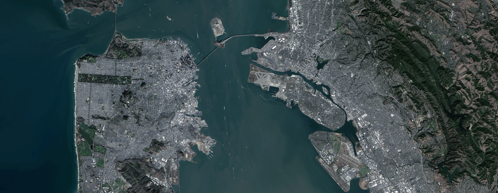
Original satellite image: a high-resolution panchromatic view of San Francisco,
the Bay, and the surrounding terrain.
Low-pass component: heavy Gaussian blurring suppresses block-by-block detail
but preserves the large-scale shoreline, hills, and harbor geometry that matter
at regional planning scales.
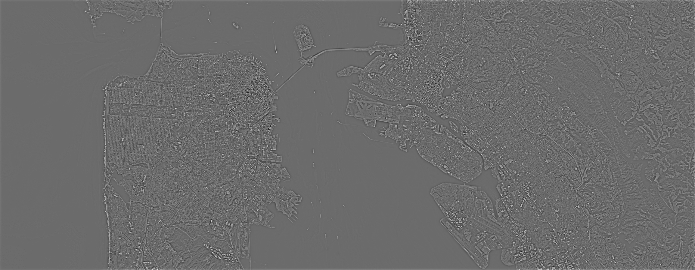
High-pass component: subtracting a blur isolates roads, piers, runways, and
building edges as an almost zero-mean detail layer. Similar high-pass
products are used in change detection and feature extraction pipelines.
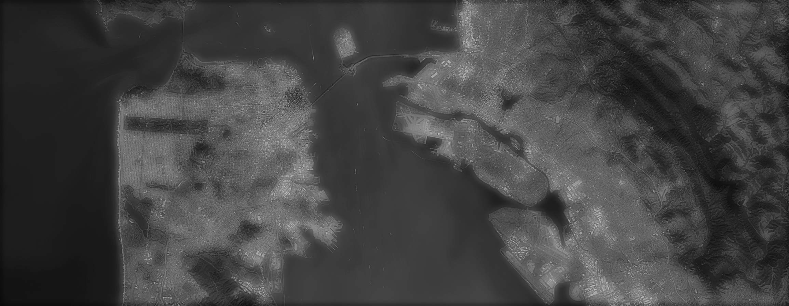
Hybrid image: adding a scaled copy of the high-pass layer back to the low-pass
background yields a map where coastlines and topography remain smooth, while
man‑made structures stand out with enhanced contrast.
Original MRI slice: a T1‑weighted axial brain image showing gray matter,
white matter, and cerebrospinal fluid with modest scanner noise.
Low-pass component: Gaussian blurring removes fine cortical folds and grain
while preserving overall brain shape and intensity falloff. This kind of
smoothing is standard before segmentation or registration.
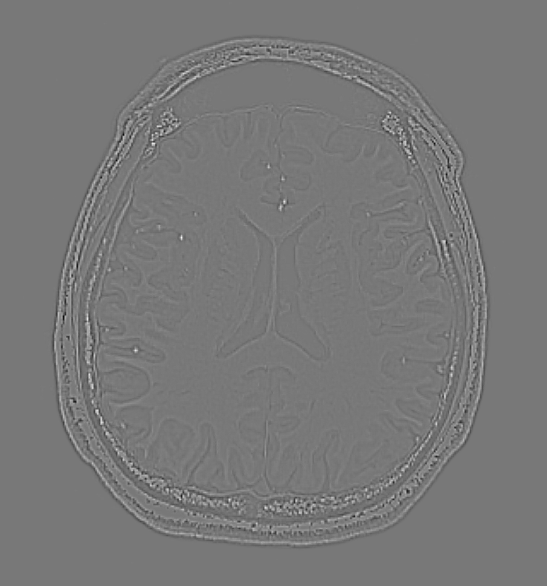
High-pass component: subtracting the blur produces an edge map that highlights
tissue boundaries between gray matter, white matter, CSF, and skull. Similar
high-frequency maps underlie many edge‑based MRI analysis methods.
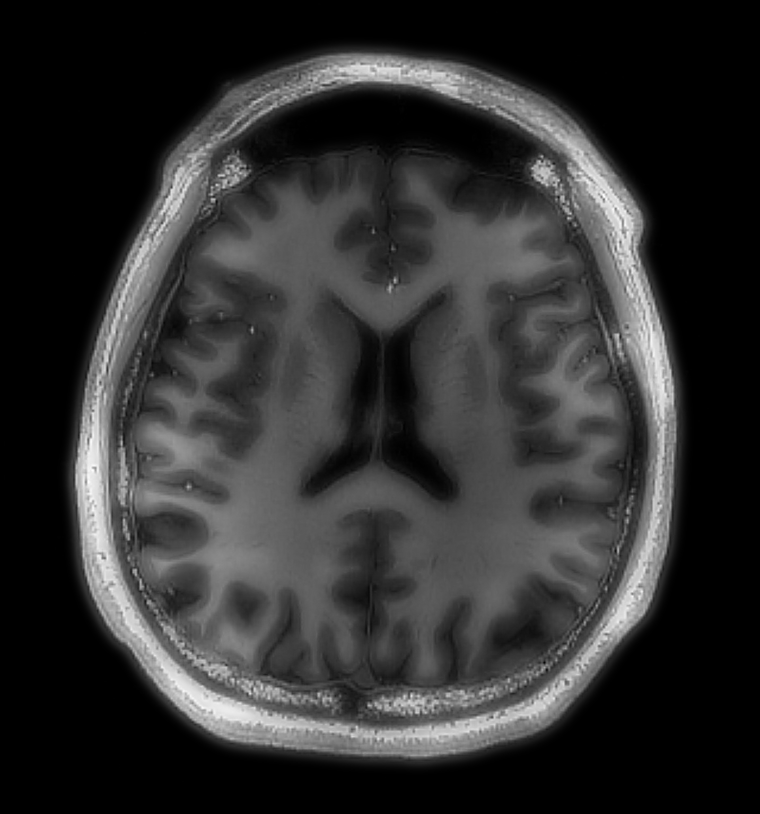
Hybrid MRI: the low-pass anatomy is combined with a scaled high-pass layer to
sharpen sulci and ventricles while keeping intensities realistic. This mirrors
unsharp masking and “edge‑enhanced” reconstructions used to make subtle
structures easier to read.
Low-pass Jolie + high-pass Obama
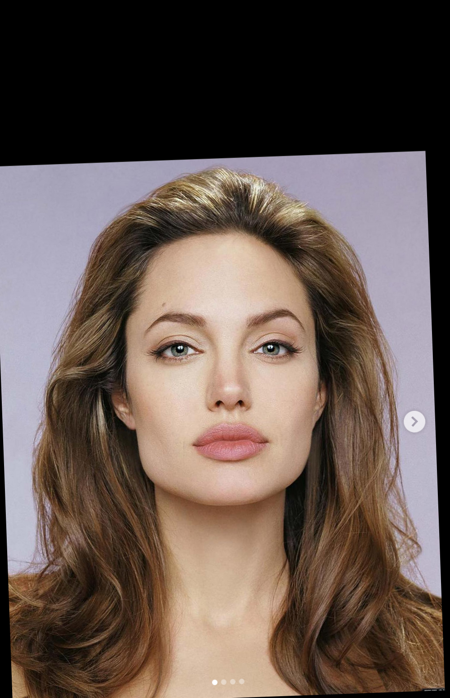
Aligned Jolie (image A): source for the low-frequency structure of the hybrid.
Aligned Obama (image B): source for high-frequency detail in the hybrid.
Low-pass Jolie with low_ksize = 35, low_sigma = 9.5.
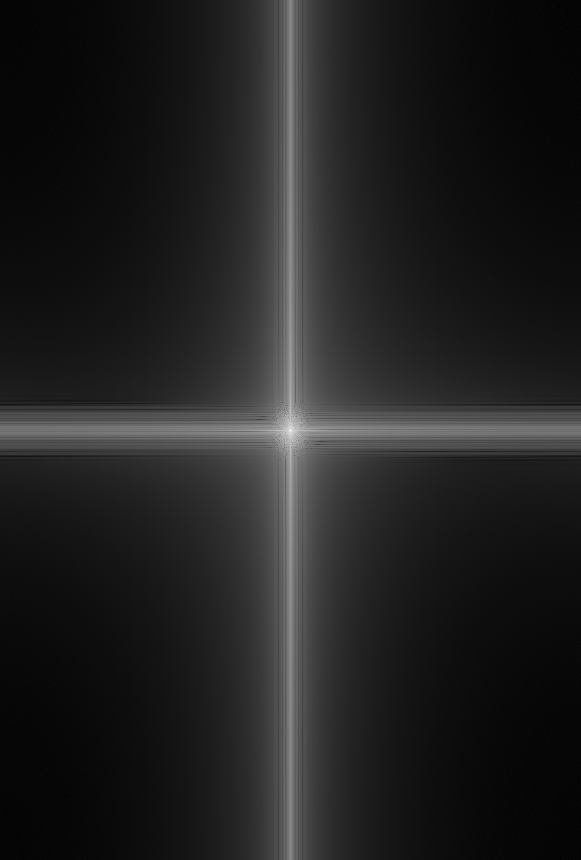
Low-pass Fourier magnitude: energy concentrated near the origin.
High-pass Obama with high_ksize = 71, high_sigma = 12.5.
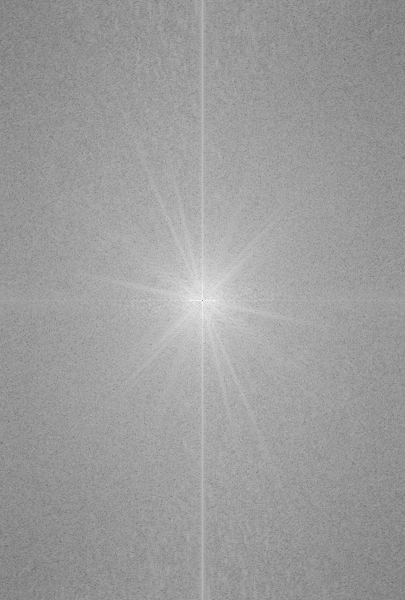
High-pass Fourier magnitude: suppressed center with energy in outer frequencies.
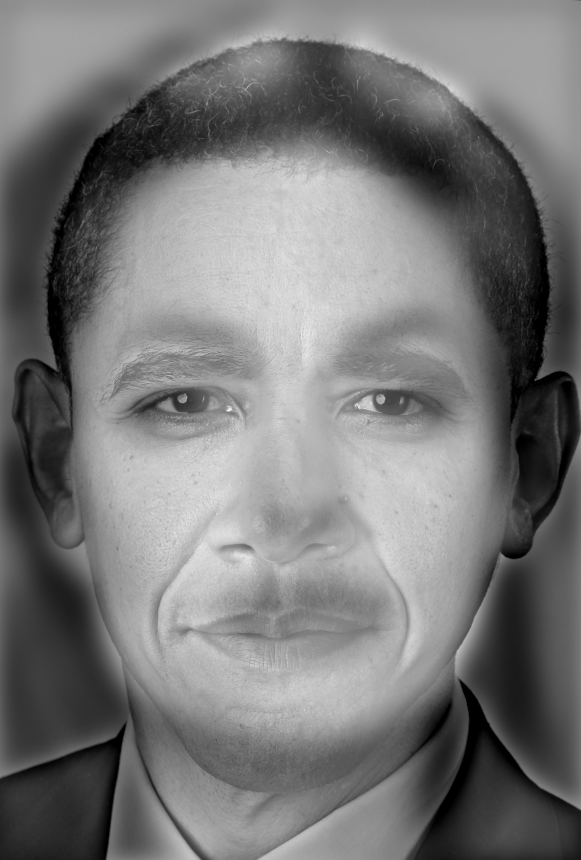
Hybrid image: low-pass Jolie + high-pass Obama.
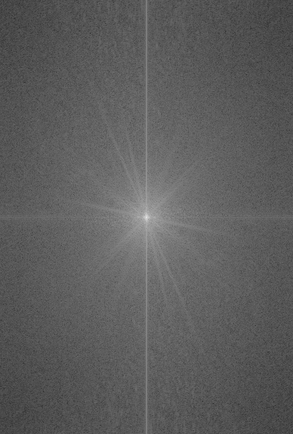
Hybrid Fourier magnitude: superposition of low- and high-frequency bands.
2.3 Gaussian and Laplacian Stacks
A Gaussian stack is defined as a sequence of images G0, …, GK
generated by repeated convolution with the same Gaussian kernel. The base level
G0 is the original image; each subsequent level
Gk+1 is obtained by smoothing Gk. Increasing the
index k removes higher spatial frequencies and leaves progressively lower ones
unchanged, so the stack organizes the image by scale.
From this sequence one defines a Laplacian stack
Lk = Gk − Gk+1. Each Laplacian level records the
change incurred when passing from blur scale k to k+1 and is therefore
band-limited: it contains structure that is present at one scale but not at the next
coarser scale. The original image satisfies the reconstruction identity
G0 = GK + Σk=0K−1 Lk, so the
decomposition is linear and lossless.
Gaussian stack – apple.
Gaussian stack – orange.
In the Gaussian stacks for the apple and orange, small values of k preserve fine
texture: sensor noise, skin blemishes, and pore structure are clearly visible. As
k increases, these high-frequency components are attenuated and only slowly varying
intensity patterns remain. The silhouette, the division between fruit and background, and a
small number of broad highlight regions persist even in the deepest blur. The progression
across levels is thus governed by a single principle: at each step, the admissible frequency
band is restricted while spatial alignment of large-scale features is preserved.
The Laplacian stacks express the same decomposition in differential form. Finest levels
contain narrow ridges and speckle corresponding to pores, grain, and the sharpest edges;
intermediate levels isolate the main fruit contour and the core of the specular highlight;
coarsest levels contain only gentle transitions between fruit, table, and background. Each
Lk is localized in scale: it vanishes at much finer and much coarser
levels because its structures have either not yet been produced by smoothing or have
already been averaged out.
Together, the Gaussian and Laplacian stacks provide a complete account of how image
information is distributed across scale. The Gaussian stack describes the state of the
image after progressively discarding detail; the Laplacian stack specifies, level by level,
which detail has been discarded. Later multiresolution procedures operate by manipulating or mixing selected
Laplacian bands
while leaving others fixed, thereby changing the allocation of structure across scales
without violating the reconstruction identity.
2.4 Multiresolution Blend
Image A
Image B
Multiresolution blending constructs a composite image by combining the Laplacian stacks of
two inputs under the control of a spatially varying mask. At each scale, the mask weights
the contribution of the apple on one side and the orange on the other; a blurred version of
the mask ensures that the transition between sources extends over a finite region rather
than being confined to a single column of pixels. The blending is performed level-wise for
all bands and for the coarsest Gaussian residual.
Apple Laplacian bands (LA)
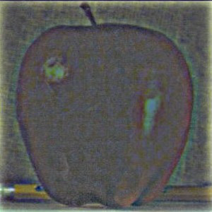
LA 0.
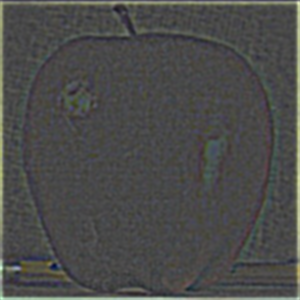
LA 1.
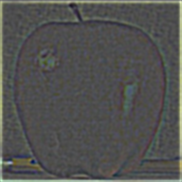
LA 2.
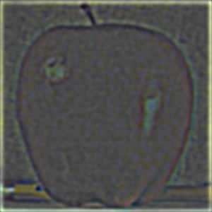
LA 3.
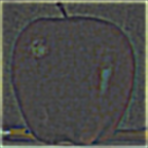
LA 4.
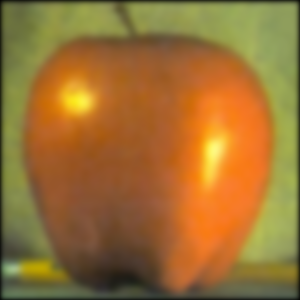
LA 5.
The LA stack contains band-pass detail from the apple. At fine levels, the bands isolate
small-scale edges along the fruit boundary and subtle texture on the skin; at intermediate
levels they capture the primary contour and highlight; at coarse levels they hold only
slow transitions between the apple interior and the background. These bands will dominate
the left half of the blend wherever the mask weight is close to one.
The LB stack plays the same role for the orange. Fine levels emphasize pore-like peel
texture and sharp rim edges, mid levels encode the dominant contour and band of specular
highlights, and coarse levels describe large-scale transitions between fruit, table, and
background. In the final composite, these structures populate the right half of the image
where the mask weights favor the orange.
Blended bands (GA)
GA 0.
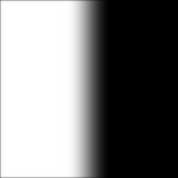
GA 1.
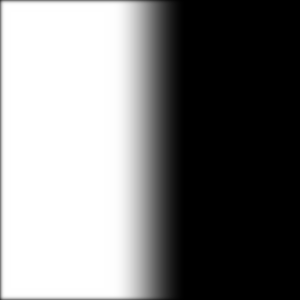
GA 2.GA 3.GA 4.GA 5.
The GA bands reveal the effect of the mask at each scale. At fine levels, the belt shows a
crisp left–right split in high-frequency detail; at intermediate levels, the transition
region broadens and mid-scale shape information is shared; at coarse levels, the shading of
the apple side morphs gradually into the shading of the orange side. These bands sum, along
with the coarsest Gaussian level, to reconstruct the oraple.
Mask stack across scales
Hard mask.
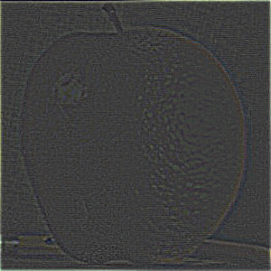
Ls 0.
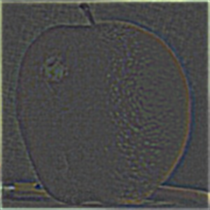
Ls 1.
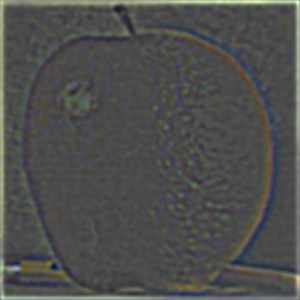
Ls 2.
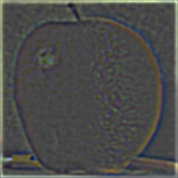
Ls 3.
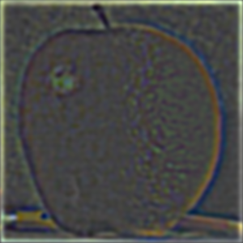
Ls 4.
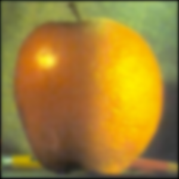
Ls 5.
The Ls stack shows how the hard left–right mask is progressively blurred with increasing
level. At high resolution, the transition occurs over a narrow strip centered on the seam,
so only a thin vertical band of high-frequency structure is mixed. At coarse levels, the
weights vary over most of the fruits, ensuring that low-frequency shading and background
tone change gradually rather than exhibiting a sharp step.
Apange?
Apple on the left, orange on the right.
Oraple
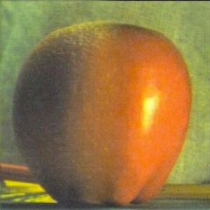
Orange on the left, apple on the right.
The band-wise visualizations show that the blending operation is distributed over the full
range of spatial scales. High-frequency bands enforce continuity of edges and texture,
intermediate bands control the handoff of medium-scale structure, and coarse bands align
global illumination and background tone. The mask stack governs the spatial extent of
mixing at each level, and the sum of all blended bands with the coarsest Gaussian level
reconstructs a composite that respects the local structure of both inputs while suppressing
the artifacts that would result from a hard cut between them.
2.4 Multiresolution Blend – Jupiter and Infrared
Image A
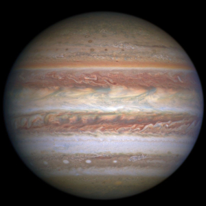
Jupiter Visible spectrum
Image B
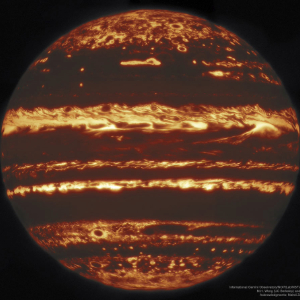
Jupiter Infarared
This blend takes a visible-light image of Jupiter (image A) and an infrared composite
(image B). Each is decomposed into a Gaussian stack and a corresponding Laplacian stack.
A circular mask centred on the disc is likewise expanded into a stack, so that, at every
scale, the weights vary smoothly from the infrared data in the interior to the visible
image near the limb. The construction therefore fixes, level by level, how much of each
modality contributes at each radius.
Infrared Laplacian bands (LA)
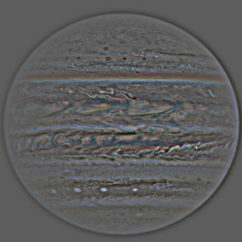
LA 0.
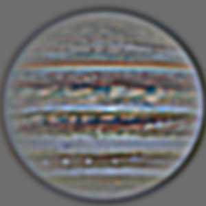
LA 1.
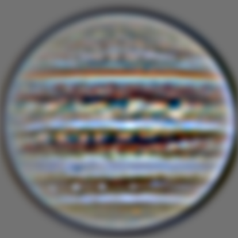
LA 2.
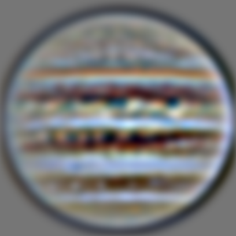
LA 3.
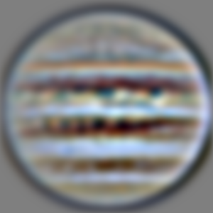
LA 4.
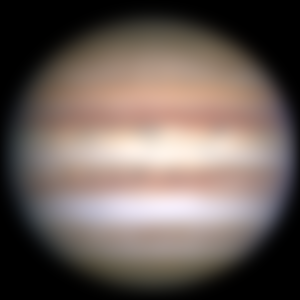
LA 5.
The LA bands encode contrast from the infrared image B. Finest levels isolate compact
bright structures and sharp boundaries within the storm belts; intermediate levels
represent the broader banded emission; the coarsest level retains only slow variation of
infrared brightness across the disc. Where the mask stack assigns high weight to the
centre, these bands supply most of the high- and mid-frequency content of the blend.
The LB bands play the same role for the visible-light image A. Fine levels contain sharp
edges around vortices and filaments, middle levels describe the familiar zonal bands and
major storms, and coarse levels capture gradual changes in albedo and limb darkening.
Towards the outer parts of the disc, where the mask favours the visible image, these
bands dominate the reconstruction.
Blended bands (GA)
GA 0.GA 1.GA 2.GA 3.GA 4.GA 5.
The GA bands show the combined effect of the mask at each scale. At high frequencies,
they already display infrared-bright structures embedded in visible cloud patterns; at
intermediate scales the belts mix smoothly, and at the coarsest scales the overall
brightening of the central region and the visible-dominated limb are both evident. Adding
all GA levels together with the coarsest Gaussian residual reconstructs a single view in
which the core follows the infrared measurement and the periphery follows the visible
image, without introducing seams across radius or scale.
Mask stack across scales
Hard mask.
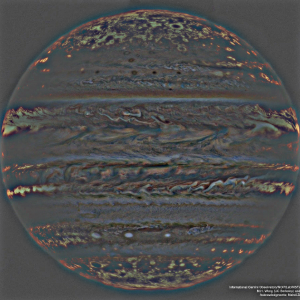
Ls 0.
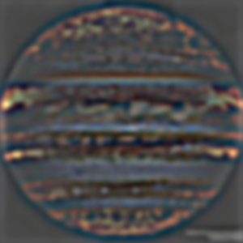
Ls 1.
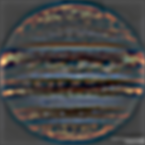
Ls 2.
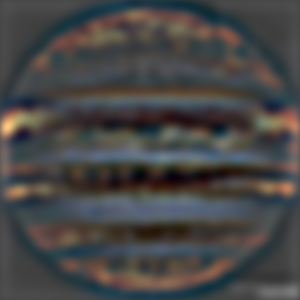
Ls 3.
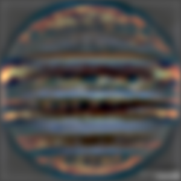
Ls 4.Ls 5.
The Ls stack records how the circular mask is smoothed as the level index increases.
Near the finest level, the weighting changes only across a narrow annulus, so mixing is
confined to a thin band of fine-scale structure. At coarser levels the transition region
occupies most of the disc, ensuring that low-frequency brightness and background tone
change gradually from the infrared-dominated interior to the visible-dominated limb.
Final Blend
Jupiter with visible cloud structure modulated by infrared emission in the
central belts.
Reverse Blend
Visible bands in the core, infrared structure emphasized toward the limb.
2.4 Multiresolution Blend – Moon and Charon
Image A
Earth’s Moon
Imabe B
Charon
The multiresolution blending pipeline is applied to Earth’s Moon and Pluto’s moon Charon.
Each image is decomposed into Gaussian and Laplacian stacks, and a vertical mask is lifted
to a stack so that, at each scale, the weights vary smoothly from the Charon side to the
Moon side across the disc.
Charon Laplacian bands (LA)
LA 0.LA 1.LA 2.LA 3.LA 4.LA 5.
The LA bands contain Charon’s relief, from fine crater rims and ridges at the finest level
to broad albedo and limb-darkening variations at coarser levels. These structures will
occupy the left hemisphere of the final blend wherever the mask weight is close to one.
Moon Laplacian bands (LB)
LB 0.LB 1.LB 2.LB 3.LB 4.LB 5.
The LB bands play the same role for Earth’s Moon on the right hemisphere. High levels carry
its finest crater detail, lower levels carry mare–highland contrast and global illumination.
Blending LA and LB under the mask at each scale yields a sphere with spatially consistent
relief but different geology on each side.
Blended bands (GA)
GA 0.GA 1.GA 2.GA 3.GA 4.GA 5.
The GA bands show the effect of masking at each scale: fine bands already display a clean
left–right split in crater detail, and coarse bands show a smooth transition in shading and
background tone. Their sum, together with the coarsest Gaussian level, reconstructs the
final blended planet.
The hard mask is progressively blurred as the level increases, so the transition band
widens at coarser scales. High-frequency bands therefore change sources over a narrow band
near the meridian, while low-frequency shading and background brightness change over a much
broader region.